Aisho, Shiga: things to do, food and stays
Aisho · Shiga
Aisho
Highlighted on the Shiga map.

Stay
ビジネス旅館 近江屋
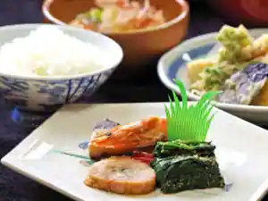
Business Ryokan Omi Ya
Ryokan inn in Echigawa, Aisho with business travelers.
ファミリーロッジ旅籠屋・彦根店
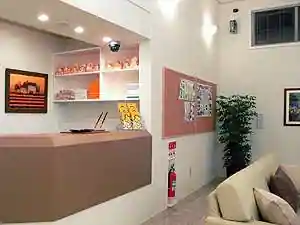
Famiri Lodge Hatago Ya Hikone
Mountain lodge in Nagano, Aisho with breakfast available and family-friendly stays.
Dining
ラーメンショップ 愛荘店
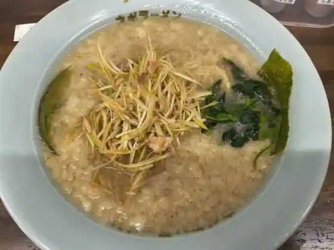
Ramen Shoppu Aisho
オカモト☆タンメン。 愛知川店
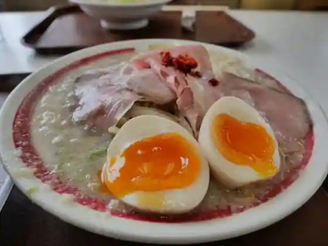
Okamoto Tanmen. Echigawa
珈琲館 南蛮茶&サンマルツァーノ
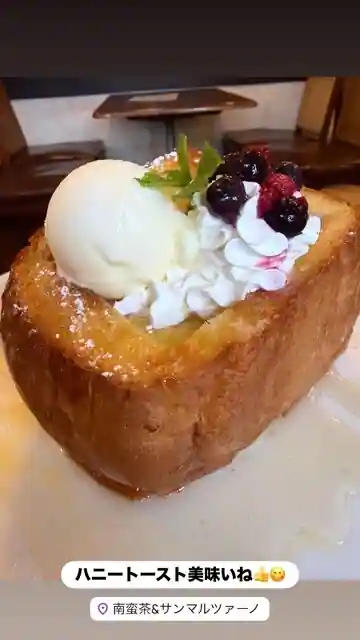
Coffee Kan Nanban Cha & Sanmarutsuano
日本晴食堂
Nippon Sei Shokudo
麺屋 半蔵
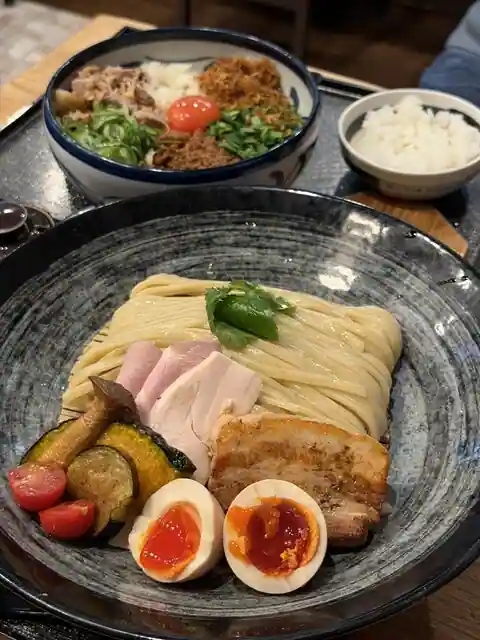
Men Ya Hanzo
らぁ麺 口福論 本店
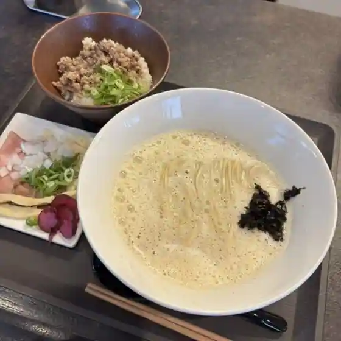
Ra Men Kofuku Ron Hon
讃岐や
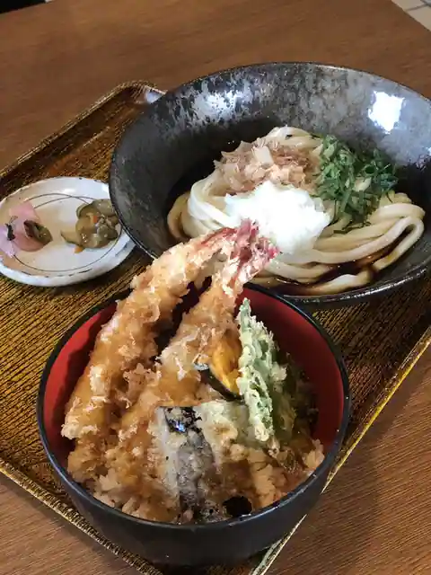
Sanuki Ya
hippo
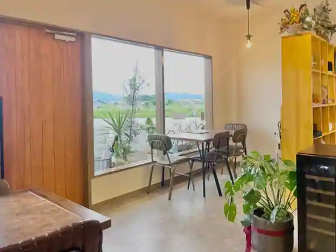
hippo
あびこ家
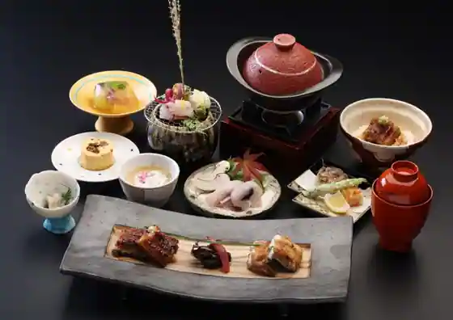
Abiko Ie
御菓子司 しろ平老舗
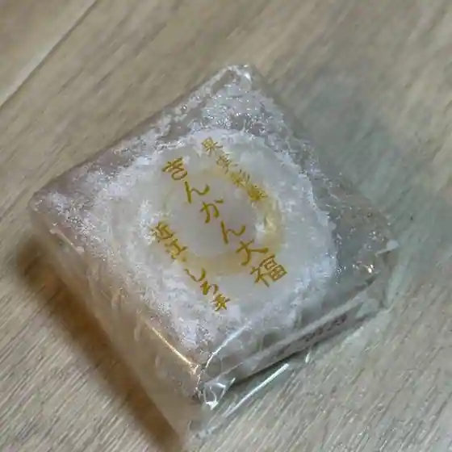
O Kashi Tsukasa Shiro Taira Shinise
麺屋 松龍
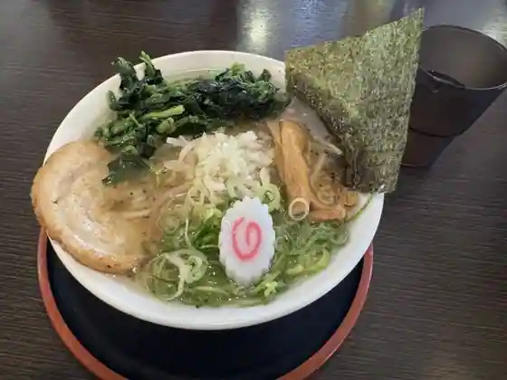
Men Ya Matsu Ryu
ルワム
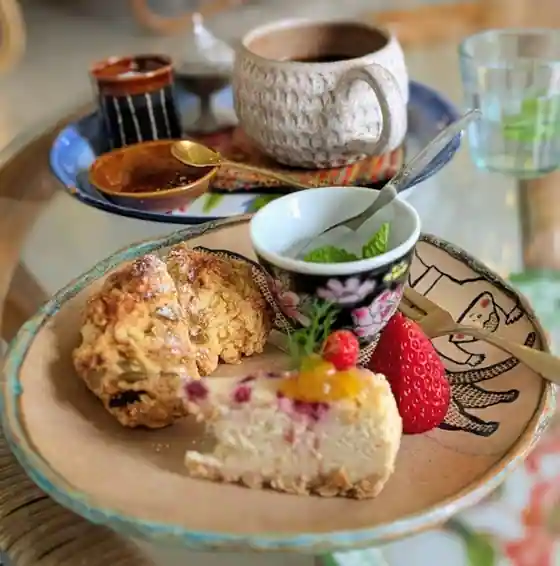
Ruwamu
スイーツダイニング 香凛舎
Sweets Dining Kaori Rin Sha
カフェ メープル
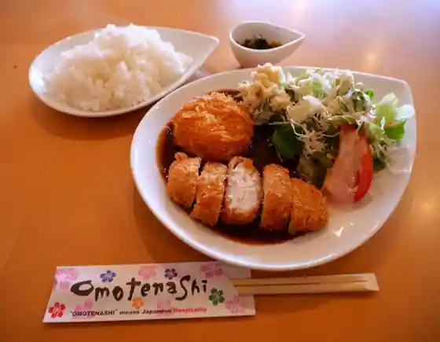
Cafe Mepuru
焼肉ホルモン肉正 愛知川本店
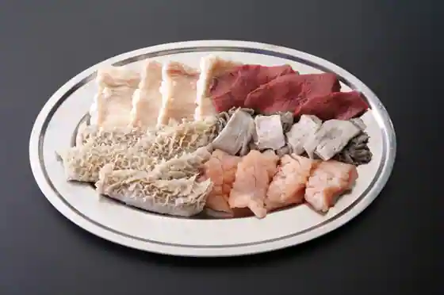
Yakiniku Horumon Niku Sei Echigawa Hon
豆の木茶屋
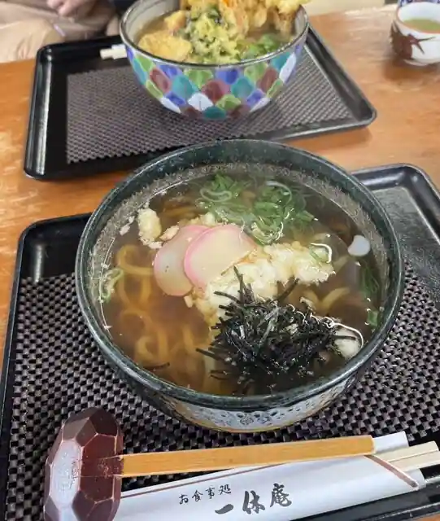
Mame No Ki Chaya
MELA
MELA
魔法のパスタ 愛知川店
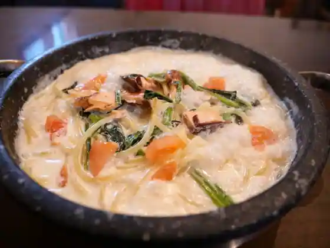
Maho No Pasta Echigawa
クロネコベーカリー
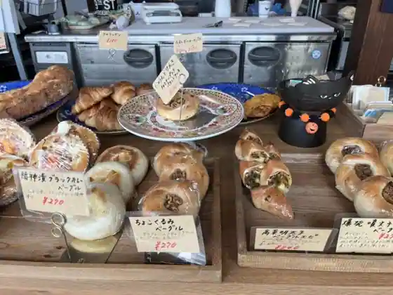
Kuroneko Bakery
Cafe ＋ zakka coque
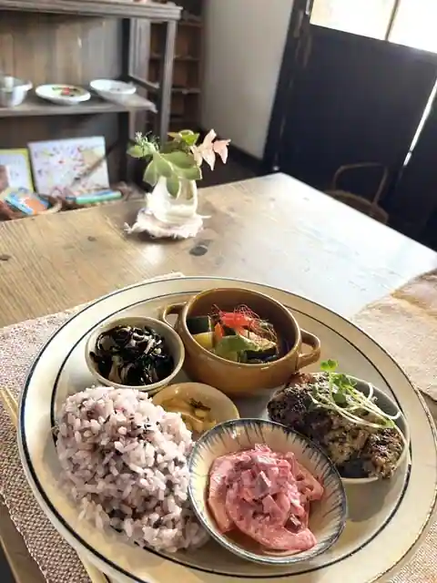
Cafe + zakka coque
近江屋
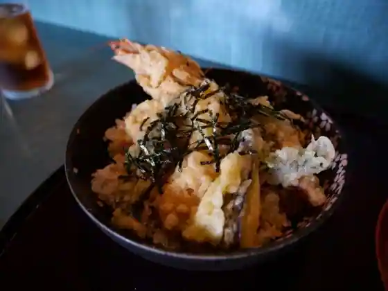
Omi Ya
カレーダイニング Asian 本店
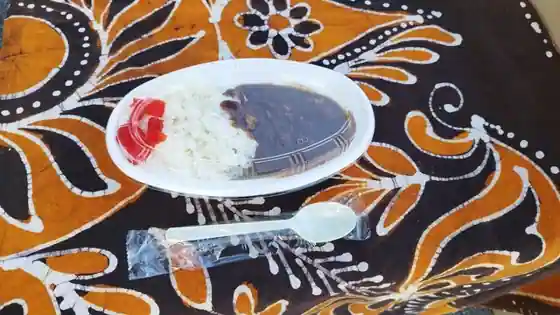
Kare Dining Asian Hon
台湾料理 鴻福楼
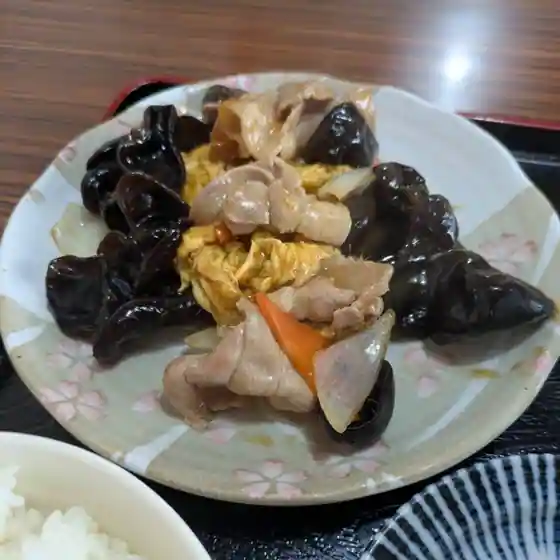
Taiwan Ryori Ko Fuku Ro
Sights
Taiko Sha

Homan Shrine

Fujii Honke

Kongo Wa Tera

Nihonryori Seiseki Takehira Ro
Echigawa Eki Komyuniteihausu (Ruburu Echigawa)
Nakasendo Echigawa Yado
Homan Tera
Joyato
Heisei no Meisui Hyakusen (Yama Hiko Yusui)
Aisho Ritsu Rekishi Bunka Museum
Koto Miyama Kan Aisho
Omitetsudo Echigawa Eki
Megata Castle Ruins
Omi Jofu Dento Sangyo Hall
Yumemachi Terasu Echi
U So Kawa Gorge (U So Kawa Dam)
Echigawa Fureai Honjin (Kyu Omi Ginko Echigawa Branch)
Aisho Supotsu Center
Aisho Town Hall